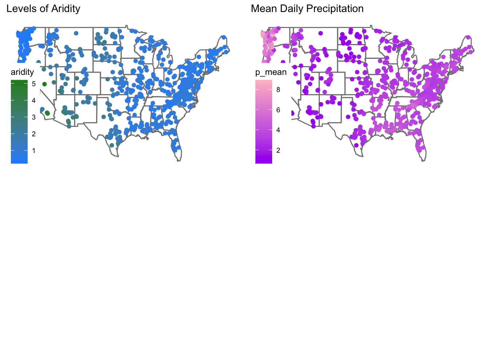
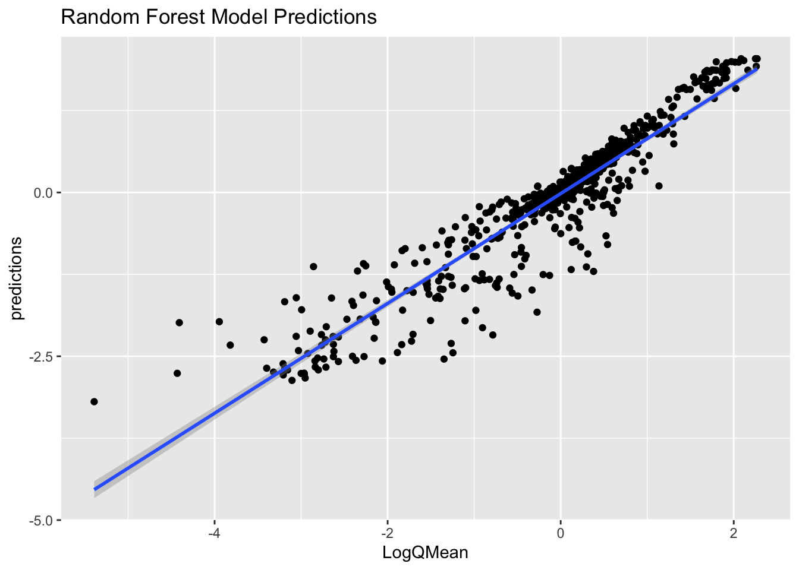
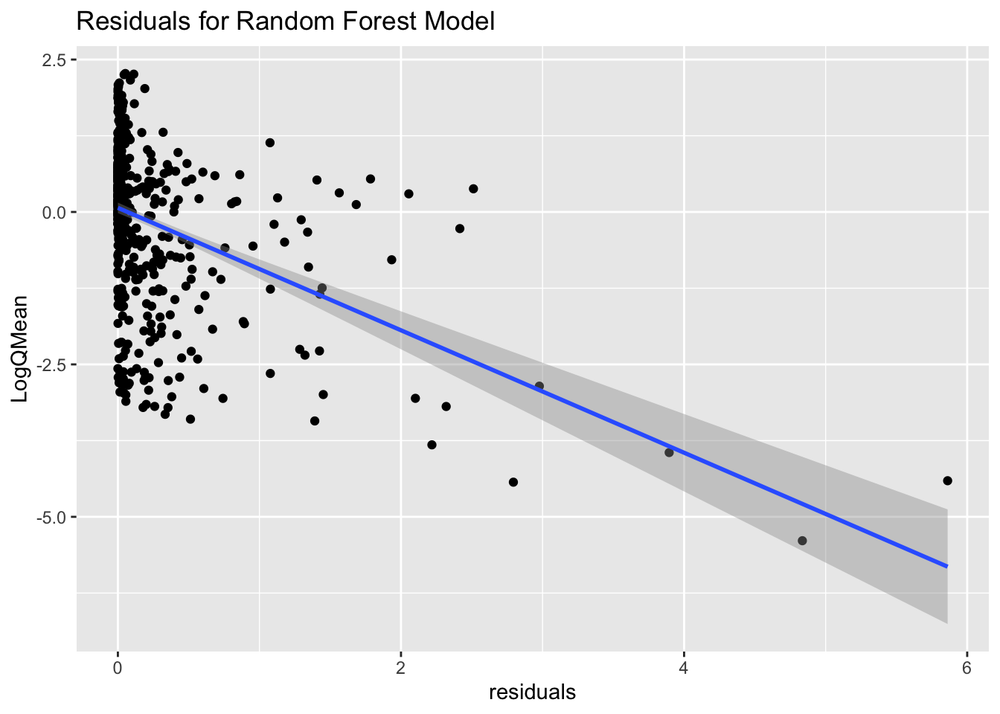

── Conflicts ────────────────────────────────────────── tidyverse_conflicts() ──
✖ dplyr::filter() masks stats::filter()
✖ dplyr::lag() masks stats::lag()
ℹ Use the conflicted package (<http://conflicted.r-lib.org/>) to force all conflicts to become errors
root <-'https://gdex.ucar.edu/dataset/camels/file'download.file('https://gdex.ucar.edu/dataset/camels/file/camels_attributes_v2.0.pdf', 'data/camels_attributes_v2.0.pdf')types <-c("clim", "geol", "soil", "topo", "vege", "hydro")# Where the files live online ...remote_files <-glue('{root}/camels_{types}.txt')# where we want to download the data ...local_files <-glue('data/camels_{types}.txt')walk2(remote_files, local_files, download.file, quiet =TRUE)# Read and merge datacamels <-map(local_files, read_delim, show_col_types =FALSE) camels <-power_full_join(camels ,by ='gauge_id')
Warning in as_grob.default(plot): Cannot convert object of class numeric into a
grob.

Visual EDA
# Create a scatter plot of aridity vs rainfallggplot(camels, aes(x = aridity, y = p_mean)) +# Add points colored by mean flowgeom_point(aes(color = q_mean)) +# Add a linear regression linegeom_smooth(method ="lm", color ="red", linetype =2) +# Apply the viridis color scalescale_color_viridis_c() +# Add a title, axis labels, and theme (w/ legend on the bottom)theme_linedraw() +theme(legend.position ="bottom") +labs(title ="Aridity vs Rainfall vs Runnoff", x ="Aridity", y ="Rainfall",color ="Mean Flow")
`geom_smooth()` using formula = 'y ~ x'
ggplot(camels, aes(x = aridity, y = p_mean)) +geom_point(aes(color = q_mean)) +geom_smooth(method ="lm") +scale_color_viridis_c() +# Apply log transformations to the x and y axesscale_x_log10() +scale_y_log10() +theme_linedraw() +theme(legend.position ="bottom") +labs(title ="Aridity vs Rainfall vs Runnoff", x ="Aridity", y ="Rainfall",color ="Mean Flow")
`geom_smooth()` using formula = 'y ~ x'
ggplot(camels, aes(x = aridity, y = p_mean)) +geom_point(aes(color = q_mean)) +geom_smooth(method ="lm") +# Apply a log transformation to the color scalescale_color_viridis_c(trans ="log") +scale_x_log10() +scale_y_log10() +theme_linedraw() +theme(legend.position ="bottom",# Expand the legend width ...legend.key.width =unit(2.5, "cm"),legend.key.height =unit(.5, "cm")) +labs(title ="Aridity vs Rainfall vs Runnoff", x ="Aridity", y ="Rainfall",color ="Mean Flow")
`geom_smooth()` using formula = 'y ~ x'
Splitting the Data
set.seed(123)# Bad form to perform simple transformations on the outcome variable within a # recipe. So, we'll do it here.camels <- camels |>mutate(logQmean =log(q_mean))# Generate the splitcamels_split <-initial_split(camels, prop =0.8)camels_train <-training(camels_split)camels_test <-testing(camels_split)camels_cv <-vfold_cv(camels_train, v =10)
Creating a Recipe
rec <-recipe(logQmean ~ aridity + p_mean, data = camels_train) %>%# Log transform the predictor variables (aridity and p_mean)step_log(all_predictors()) %>%# Add an interaction term between aridity and p_meanstep_interact(terms =~ aridity:p_mean) |># Drop any rows with missing values in the predstep_naomit(all_predictors(), all_outcomes())
Defining Models and Workflows
# Define modellm_model <-linear_reg() %>%# define the engineset_engine("lm") %>%# define the modeset_mode("regression")# Instantiate a workflow ...lm_wf <-workflow() %>%# Add the recipeadd_recipe(rec) %>%# Add the modeladd_model(lm_model) %>%# Fit the model to the training datafit(data = camels_train) rf_model <-rand_forest() %>%set_engine("ranger", importance ="impurity") %>%set_mode("regression")rf_wf <-workflow() %>%# Add the recipeadd_recipe(rec) %>%# Add the modeladd_model(rf_model) %>%# Fit the modelfit(data = camels_train) b_model<-boost_tree()%>%set_engine('xgboost')%>%set_mode('regression')bm_wf<-workflow()%>%add_recipe(rec)%>%add_model(b_model)%>%fit(data=camels_train)
Based on the testing of the random forest, boost tree, and linear regression models, the random forest model is the best choice. It has a low mean absolute error and rmse which mean there are low levels of errors detected.
The model I selected is the Random forest model with a ranger engine and a regression mode. It works well because it is designed to take multiple predictors and return a prediction based on hyperparameters within the data.
Building the Specified Model
# Define the model with tuneable parametersrf_model <-rand_forest(min_n =tune(), trees =tune()) %>%set_engine("ranger", importance ="impurity") %>%set_mode("regression")# 2. Create the workflowrf_wf_tuned <-workflow() %>%add_recipe(rec) %>%add_model(rf_model)
From what I see as minimal node size decreases, so does rmse and mae while rsq increases. This indicates high correlation and low error between the data set and the minimal node size. There is no obvious correlation between the number of trees and the data set.
Check the Skill of the Tuned Model
collect_metrics(model_params)
# A tibble: 60 × 8
trees min_n .metric .estimator mean n std_err .config
<int> <int> <chr> <chr> <dbl> <int> <dbl> <chr>
1 18 17 mae standard 0.340 10 0.0130 Preprocessor1_Model01
2 18 17 rmse standard 0.553 10 0.0295 Preprocessor1_Model01
3 18 17 rsq standard 0.779 10 0.0284 Preprocessor1_Model01
4 267 3 mae standard 0.346 10 0.0123 Preprocessor1_Model02
5 267 3 rmse standard 0.571 10 0.0256 Preprocessor1_Model02
6 267 3 rsq standard 0.764 10 0.0276 Preprocessor1_Model02
7 845 27 mae standard 0.332 10 0.0124 Preprocessor1_Model03
8 845 27 rmse standard 0.536 10 0.0274 Preprocessor1_Model03
9 845 27 rsq standard 0.792 10 0.0245 Preprocessor1_Model03
10 1687 12 mae standard 0.336 10 0.0126 Preprocessor1_Model04
# ℹ 50 more rows
tree_metrics =metric_set(rsq, rmse, mae)
Collect Metrics Interpretation
From the table I can interpret that data has a very low standard error which supports the significance of the testing.
Show Best
show_best(model_params, metric ="rsq")
# A tibble: 5 × 8
trees min_n .metric .estimator mean n std_err .config
<int> <int> <chr> <chr> <dbl> <int> <dbl> <chr>
1 1220 38 rsq standard 0.794 10 0.0241 Preprocessor1_Model10
2 194 34 rsq standard 0.792 10 0.0236 Preprocessor1_Model13
3 745 37 rsq standard 0.792 10 0.0242 Preprocessor1_Model05
4 1378 35 rsq standard 0.792 10 0.0241 Preprocessor1_Model18
5 625 31 rsq standard 0.792 10 0.0245 Preprocessor1_Model15
show_best(model_params, metric ="rmse")
# A tibble: 5 × 8
trees min_n .metric .estimator mean n std_err .config
<int> <int> <chr> <chr> <dbl> <int> <dbl> <chr>
1 1220 38 rmse standard 0.534 10 0.0276 Preprocessor1_Model10
2 625 31 rmse standard 0.535 10 0.0275 Preprocessor1_Model15
3 745 37 rmse standard 0.536 10 0.0279 Preprocessor1_Model05
4 194 34 rmse standard 0.536 10 0.0269 Preprocessor1_Model13
5 845 27 rmse standard 0.536 10 0.0274 Preprocessor1_Model03
show_best(model_params, metric ="mae")
# A tibble: 5 × 8
trees min_n .metric .estimator mean n std_err .config
<int> <int> <chr> <chr> <dbl> <int> <dbl> <chr>
1 519 26 mae standard 0.331 10 0.0131 Preprocessor1_Model11
2 342 21 mae standard 0.331 10 0.0129 Preprocessor1_Model14
3 918 24 mae standard 0.332 10 0.0127 Preprocessor1_Model12
4 845 27 mae standard 0.332 10 0.0124 Preprocessor1_Model03
5 1740 20 mae standard 0.332 10 0.0130 Preprocessor1_Model06
Show Best Interpretation
based on MAE the best hyper parameter for this test is the set with 336 trees and a 25 minimum number of trees
hp_best<-show_best(model_params, metric ="mae", n =1)print(hp_best)
# A tibble: 1 × 8
trees min_n .metric .estimator mean n std_err .config
<int> <int> <chr> <chr> <dbl> <int> <dbl> <chr>
1 519 26 mae standard 0.331 10 0.0131 Preprocessor1_Model11
predictions<-ggplot(full_pred, aes(x=logQmean, y=.pred))+geom_point()+geom_smooth(method ='lm')+labs(x="LogQMean", y="predictions", title="Random Forest Model Predictions")predictions
`geom_smooth()` using formula = 'y ~ x'
Warning: Removed 1 row containing non-finite outside the scale range
(`stat_smooth()`).
Warning: Removed 1 row containing missing values or values outside the scale range
(`geom_point()`).

ggplot Residuals
residuals<-ggplot(full_pred_mutated, aes(x=logQmean, y=residuals))+geom_point()+geom_smooth(method='lm')+labs(x="LogQMean", y="residuals", title="Residuals for Random Forest Model")residuals
`geom_smooth()` using formula = 'y ~ x'
Warning: Removed 1 row containing non-finite outside the scale range
(`stat_smooth()`).
Warning: Removed 1 row containing missing values or values outside the scale range
(`geom_point()`).

Combined Figure
ggarrange(residuals, predictions)
`geom_smooth()` using formula = 'y ~ x'
Warning: Removed 1 row containing non-finite outside the scale range
(`stat_smooth()`).
Warning: Removed 1 row containing missing values or values outside the scale range
(`geom_point()`).
`geom_smooth()` using formula = 'y ~ x'
Warning: Removed 1 row containing non-finite outside the scale range (`stat_smooth()`).
Removed 1 row containing missing values or values outside the scale range
(`geom_point()`).